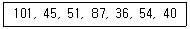
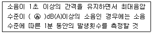
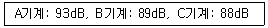

산업위생관리기사 (2021-08-14 기출문제)
1과목: 산업위생학개론
1. 화학물질 및 물리적 인자의 노출기준상 사람에게 충분한 발암성 증거가 있는 물질의 표기는?
- 1A
- 1B
- 2C
- 1D
(정답률: 86%)

2. 미국산업안전보건연구원(NIOSH)에서 제시한 중량물의 들기작업에 관한 감시기준(Action Limit)과 최대허용기준(Maximum Permissible Limit)의 관계를 바르게 나타낸 것은?
- MPL=5AL
- MPL=3AL
- MPL=10AL
- MPL=√2AL
(정답률: 77%)
3. 산업안전보건법령상 작업환경측정에 관한 내용으로 옳지 않은 것은?
- 모든 측정은 지역 시료채취방법을 우선으로 실시하여야 한다.
- 작업환경측정을 실시하기 전에 예비조사를 실시하여야 한다.
- 작업환경측정자는 그 사업장에 소속된 사람으로 산업위생관리산업기사 이상의 자격을 가진 사람이다.
- 작업이 정상적으로 이루어져 작업시간과 유해인자에 대한 근로자의 노출 정도를 정확히 평가할 수 있을 때 실시하여야 한다.
(정답률: 81%)
4. 근골격계질환 평가 방법 중 JSI(Job Strain Index)에 대한 설명으로 옳지 않은 것은?
- 특히 허리와 팔을 중심으로 이루어지는 작업 평가에 유용하게 사용된다.
- JSI 평가결과의 점수가 7점 이상은 위험한 작업이므로 즉시 작업개선이 필요한 작업으로 관리기준을 제시하게 된다.
- 이 기법은 힘, 근육사용 기간, 작업 자세, 하루 작업시간 등 6개의 위험요소로 구성되어, 이를 곱한 값으로 상지질환의 위험성을 평가한다.
- 이 평가방법은 손목의 특이적인 위험성만을 평가하고 있어 제한적인 작업에 대해서만 평가가 가능하고, 손, 손목 부위에서 중요한 진동에 대한 위험요인이 배제되었다는 단점이 있다.
(정답률: 60%)
5. 휘발성 유기화합물의 특징이 아닌 것은?
- 물질에 따라 인체에 발암성을 보이기도 한다.
- 대기 중에 반응하여 광화학 스모그를 유발한다.
- 증기압이 낮아 대기 중으로 쉽게 증발하지 않고 실내에 장기간 머무른다.
- 지표면 부근 오존 생성에 관여하여 결과적으로 지구온난화에 간접적으로 기여한다.
(정답률: 81%)
6. 체중이 60kg인 사람이 1일 8시간 작업 시 안전흡수량이 1mg/kg인 물질의 체내 흡수를 안전흡수량 이하로 유지하려면 공기 중 유해물질 농도를 몇 mg/m3이하로 하여야 하는가? (단, 작업 시 폐환기율은 1.25m3/hr, 체내 잔류율은 1로 가정한다.)
- 0.06
- 0.6
- 6
- 60
(정답률: 60%)
7. 업무상 사고나 업무상 질병을 유발할 수 있는 불안전한 행동의 직접원인에 해당되지 않는 것은?
- 지식의 부족
- 기능의 미숙
- 태도의 불량
- 의식의 우회
(정답률: 70%)
8. 산업위생의 목적과 가장 거리가 먼 것은?
- 근로자의 건강을 유지시키고 작업능률을 향상시킴
- 근로자들의 육체적, 정신적, 사회적 건강을 증진시킴
- 유해한 작업환경 및 조건으로 발생한 질병을 진단하고 치료함
- 작업 환경 및 작업 조건이 최적화되도록 개선하여 질병을 예방함
(정답률: 83%)
9. 교대근무에 있어 야간작업의 생리적 현상으로 옳지 않은 것은?
- 체중의 감소가 발생한다.
- 체온이 주간보다 올라간다.
- 주간 근무에 비하여 피로를 쉽게 느낀다.
- 수면 부족 및 식사시간의 불규칙으로 위장장애를 유발한다.
(정답률: 85%)
10. 미국에서 1910년 납(lead) 공장에 대한 조사를 시작으로 레이온 공장의 이황화탄소 중독, 구리 광산에서 규폐증, 수은 광산에서의 수은 중독 등을 조사하여 미국의 산업보건 분야에 크게 공헌한 선구자는?
- Leonard Hill
- Max Von Pettenkofer
- Edward Chadwick
- Alice Hamilton
(정답률: 74%)
11. 산업안전보건법령상 작업환경측정 대상 유해인자(분진)에 해당하지 않는 것은? (단, 그 밖에 고용노동부장관이 정하여 고시하는 인체에 해로운 유해인자는 제외한다.)
- 면 분진(Cotton dusts)
- 목재 분진(Wood dusts)
- 지류 분진(Paper dusts)
- 곡물 분진(Grain dusts)
(정답률: 72%)
12. RMR이 10인 격심한 작업을 하는 근로자의 실동률(A)과 계속작업의 한계시간(B)으로 옳은 것은? (단, 실동률은 사이또 오시마식을 적용한다.)
- A: 55%, B: 약 7분
- A: 45%, B: 약 5분
- A: 35%, B: 약 3분
- A: 25%, B: 약 1분
(정답률: 62%)
13. 다음 중 산업안전보건법령상 제조 등이 허가되는 유해물질에 해당하는 것은?
- 석면(Asbestos)
- 베릴륨(Beryllium)
- 황린 성냥(Yellow phosphorus match)
- β-나프틸아민과 그 염(β-Naphthylamine and its salts)
(정답률: 63%)
14. 직업병 진단 시 유해요인 노출 내용과 정도에 대한 평가 요소와 가장 거리가 먼 것은?
- 성별
- 노출의 추정
- 작업환경측정
- 생물학적 모니터링
(정답률: 79%)
15. 직업적성검사 중 생리적 기능검사에 해당하지 않는 것은?
- 체력검사
- 감각기능검사
- 심폐기능검사
- 지각동작검사
(정답률: 70%)
16. 산업재해 통계 중 재해발생건수(100만 배)를 총 연인원의 근로시간수로 나누어 산정하는 것으로 재해발생의 정도를 표현하는 것은?
- 강도율
- 도수율
- 발생율
- 연천인율
(정답률: 78%)
17. 직업병 및 작업관련성 질환에 관한 설명으로 옳지 않은 것은?
- 작업관련성 질환은 작업에 의하여 악화되거나 작업과 관련하여 높은 발병률을 보이는 질병이다.
- 직업병은 일반적으로 단일요인에 의해, 작업관련성 질환은 다수의 원인 요인에 의해서 발병된다.
- 직업병은 직업에 의해 발생된 질병으로서 직업 환경 노출과 특정 질병 간에 인과관계는 불분명하다.
- 작업관련성 질환은 작업환경과 업무수행상의 요인들이 다른 위험요인과 함께 질병발생의 복합적 병인 중 한 요인으로서 기여한다.
(정답률: 59%)
18. 미국산업위생학술원(AAIH)이 채택한 윤리강령 중 사업주에 대한 책임에 해당되는 내용은?
- 일반 대중에 관한 사항은 정직하게 발표한다.
- 위험 요소와 예방 조치에 관하여 근로자와 상담한다.
- 성실성과 학문적 실력 면에서 최고 수준을 유지한다.
- 근로자의 건강에 대한 궁극적인 책임은 사업주에게 있음을 인식시킨다.
(정답률: 74%)
19. 단기간의 휴식에 의하여 회복될 수 없는 병적상태를 일컫는 용어는?
- 곤비
- 과로
- 국소피로
- 전신피로
(정답률: 84%)
20. 사무실 공기관리 지침 상 오염물질과 관리기준이 잘못 연결된 것은? (단, 관리기준은 8시간 시간가중평균농도이며, 고용노동부 고시를 따른다.)
- 총부유세균 – 800CFU/m3
- 일산화탄소(CO) - 10ppm
- 초미세먼지(PM2.5) - 50μg/m3
- 포름알데히드(HCHO) - 150μg/m3
(정답률: 65%)
2과목: 작업위생측정 및 평가
21. 금속탈지 공정에서 측정한 trichloroethylene의 농도(ppm)가 아래와 같을 때, 기하평균 농도(ppm)는?

- 49.7
- 54.7
- 55.2
- 57.2
(정답률: 61%)
22. 공기 중 먼지를 채취하여 채취된 입자 크기의 중앙값(median)은 1.12㎛이고 84%에 해당하는 크기가 2.68㎛일 때, 기하표준편차 값은? (단, 채취된 입경의 분포는 대수정규분포를 따른다.)
- 0.42
- 0.94
- 2.25
- 2.39
(정답률: 36%)
23. 입경이 20㎛이고 입자비중이 1.5인 입자의 침강 속도(cm/s)는?
- 1.8
- 2.4
- 12.7
- 36.2
(정답률: 60%)
24. 어느 작업장에서 시료채취기를 사용하여 분진 농도를 측정한 결과 시료채취 전/후 여과지의 무게가 각각 32.4/44.7mg일 때, 이 작업장의 분진 농도(mg/m3)는? (단, 시료채취를 위해 사용된 펌프의 유량은 20L/min이고, 2시간 동안 시료를 채취하였다.)
- 5.1
- 6.2
- 10.6
- 12.3
(정답률: 56%)
25. 근로자 개인의 청력 손실 여부를 알기 위해 사용하는 청력 측정용 기기는?
- Audiometer
- Noise dosimeter
- Sound level meter
- Impact sound level meter
(정답률: 60%)
26. Fick법칙이 적용된 확산포집방법에 의하여 시료가 포집될 경우, 포집량에 영향을 주는 요인과 가장 거리가 먼 것은?
- 공기 중 포집대상물질 농도와 포집매체에 함유된 포집대상물질의 농도 차이
- 포집기의 표면이 공기에 노출된 시간
- 대상물질과 확산매체와의 확산계수 차이
- 포집기에서 오염물질이 포집되는 면적
(정답률: 50%)
27. 옥내의 습구흑구온도지수(WBGT)를 산출하는 식은?
- WBGT(℃)=0.7×자연습구온도+0.3×흑구온도
- WBGT(℃)=0.4×자연습구온도+0.6×흑구온도
- WBGT(℃)=0.7×자연습구온도+0.1×흑구온도+0.2×건구온도
- WBGT(℃)=0.7×자연습구온도+0.2×흑구온도+0.1×건구온도
(정답률: 75%)
28. 87℃와 동등한 온도는? (단, 정수로 반올림한다.)
- 351K
- 189°F
- 700°R
- 186K
(정답률: 56%)
29. 입자상 물질을 채취하는 방법 중 직경분립충돌기의 장점으로 틀린 것은?
- 호흡기에 부분별로 침착된 입자크기의 자료를 추정할 수 있다.
- 흡입성, 흉곽성, 호흡성 입자의 크기별 분포와 농도를 계산할 수 있다.
- 시료 채취 준비에 시간이 적게 걸리며 비교적 채취가 용이하다.
- 입자의 질량크기분포를 얻을 수 있다.
(정답률: 71%)
30. 공기 중 유기용제 시료를 활성탄관으로 채취하였을 때 가장 적절한 탈착용매는?
- 황산
- 사염화탄소
- 중크롬산칼륨
- 이황화탄소
(정답률: 67%)
31. 산업안전보건법령상 소음 측정방법에 관한 내용이다. ( Ⓐ )안에 맞는 내용은?

- 110
- 120
- 130
- 140
(정답률: 68%)
32. 산업안전보건법령상 단위작업장소에서 작업근로자수가 17명일 때, 측정해야 할 근로자수는? (단, 시료채취는 개인 시료채취로 한다.)
- 1
- 2
- 3
- 4
(정답률: 60%)
33. 실리카겔과 친화력이 가장 큰 물질은?
- 알데하이드류
- 올레핀류
- 파라핀류
- 에스테르류
(정답률: 58%)
34. 시료채취방법 중 유해물질에 따른 흡착제의 연결이 적절하지 않은 것은?
- 방향족 유기용제류 – Charcoal tube
- 방향족 아민류 – Silicagel tube
- 니트로벤젠 – Silicagel tube
- 알코올류 – Amberlite(XAD-2)
(정답률: 49%)
35. 직독식 기구에 대한 설명과 가장 거리가 먼 것은?
- 측정과 작동이 간편하여 인력과 분석비를 절감할 수 있다.
- 연속적인 시료채취전략으로 작업시간 동안 하나의 완전한 시료채취에 해당된다.
- 현장에서 실제 작업시간이나 어떤 순간에서 유해인자의 수준과 변화를 쉽게 알 수 있다.
- 현장에서 즉각적인 자료가 요구될 때 민감성과 특이성이 있는 경우 매우 유용하게 사용될 수 있다.
(정답률: 60%)
36. 측정값이 1, 7, 5, 3, 9일 때, 변이계수(%)는?
- 183
- 133
- 63
- 13
(정답률: 45%)
37. 어느 작업장에서 작동하는 기계 각각의 소음 측정결과가 아래와 같을 때, 총 음압수준(dB)은? (단, A, B, C기계는 동시에 작동된다.)

- 91.5
- 92.7
- 95.3
- 96.8
(정답률: 64%)
38. 검지관의 장ㆍ단점에 관한 내용으로 옳지 않은 것은?
- 사용이 간편하고, 복잡한 분석실 분석이 필요 없다.
- 산소결핍이나 폭발성 가스로 인한 위험이 있는 경우에도 사용이 가능하다.
- 민감도 및 특이도가 낮고 색변화가 선명하지 않아 판독자에 따라 변이가 심하다.
- 측정대상물질의 동정이 미리 되어 있지 않아도 측정을 용이하게 할 수 있다.
(정답률: 64%)
39. 어떤 작업장의 8시간 작업 중 연속음 소음 100dB(A)가 1시간, 95dB(A)가 2시간 발생하고 그 외 5시간은 기준 이하의 소음이 발생되었을 때, 이 작업장의 누적소음도에 대한 노출기준 평가로 옳은 것은?
- 0.75로 기준 이하였다.
- 1.0으로 기준과 같았다.
- 1.25로 기준을 초과하였다.
- 1.50으로 기준을 초과하였다.
(정답률: 53%)
40. 유해인자에 대한 노출평가방법인 위해도평가(Risk assessment)를 설명한 것으로 가장 거리가 먼 것은?
- 위험이 가장 큰 유해인자를 결정하는 것이다.
- 유해인자가 본래 가지고 있는 위해성과 노출요인에 의해 결정된다.
- 모든 유해인자 및 작업자, 공정을 대상으로 동일한 비중을 두면서 관리하기 위한 방안이다.
- 노출량이 높고 건강상의 영향이 큰 유해인자인 경우 관리해야 할 우선순위도 높게 된다.
(정답률: 65%)
3과목: 작업환경관리대책
41. 호흡기 보호구에 대한 설명으로 옳지 않은 것은?
- 호흡기 보호구를 선정할 때는 기대되는 공기중의 농도를 노출기준으로 나눈 값을 위해비(HR)라 하는데, 위해비보다 할당보호계수(APF)가 작은 것을 선택한다.
- 할당보호계수(APF)가 100인 보호구를 착용하고 작업장에 들어가면 외부 유해물질로부터 적어도 100배 만큼의 보호를 받을 수 있다는 의미이다.
- 보호구를 착용함으로써 유해물질로부터 얼마만큼 보호해주는지 나타내는 것은 보호계수(PF)이다.
- 보호계수(PF)는 보호구 밖의 농도(Co)와 안의 농도(Ci)의 비(Co/Ci)로 표현할 수 있다.
(정답률: 55%)
42. 흡입관의 정압 및 속도압은 –30.5mmH2O, 7.2mmH2O이고, 배출관의 정압 및 속도압은 20.0mmH2O, 15mmH2O일 때, 송풍기의 유효전압(mmH2O)은?
- 58.3
- 64.2
- 72.3
- 81.1
(정답률: 43%)
43. 환기시설 내 기류가 기본적 유체역학적 원리에 의하여 지배되기 위한 전제 조건에 관한 내용으로 틀린 것은?
- 환기시설 내외의 열교환은 무시한다.
- 공기의 압축이나 팽창을 무시한다.
- 공기는 포화 수증기 상태로 가정한다.
- 대부분의 환기시설에서는 공기 중에 포함된 유해물질의 무게와 용량을 무시한다.
(정답률: 64%)
44. 전기도금 공정에 가장 적합한 후드 형태는?
- 캐노피 후드
- 슬롯 후드
- 포위식 후드
- 종형 후드
(정답률: 48%)
45. 보호구의 재질에 따른 효과적 보호가 가능한 화학물질을 잘못 짝지은 것은?
- 가죽 - 알코올
- 천연고무 - 물
- 면 – 고체상 물질
- 부틸고무 – 알코올
(정답률: 66%)
46. 슬롯(Slot) 후드의 종류 중 전원주형의 배기량은 1/4원주형 대비 약 몇 배인가?
- 2배
- 3배
- 4배
- 5배
(정답률: 39%)
47. 터보(Turbo) 송풍기에 관한 설명으로 틀린 것은?
- 후향날개형 송풍기라고도 한다.
- 송풍기의 깃이 회전방향 반대편으로 경사지게 설계되어 있다.
- 고농도 분진함유 공기를 이송시킬 경우, 집진기 후단에 설치하여 사용해야 한다.
- 방사날개형이나 전향날개형 송풍기에 비해 효율이 떨어진다.
(정답률: 72%)
48. 밀도가 1.225kg/m3인 공기가 20m/s의 속도로 덕트를 통과하고 있을 때 동압(mmH2O)은?
- 15
- 20
- 25
- 30
(정답률: 58%)
49. 정압회복계수가 0.72이고 정압회복량이 7.2mmH2O인 원형 확대관의 압력손실(mmH2O)은?
- 4.2
- 3.6
- 2.8
- 1.3
(정답률: 37%)
50. 유기용제 취급 공정의 작업환경관리대책으로 가장 거리가 먼 것은?
- 근로자에 대한 정신건강관리 프로그램 운영
- 유기용제의 대체사용과 작업공정 배치
- 유기용제 발산원의 밀폐등 조치
- 국소배기장치의 설치 및 관리
(정답률: 69%)
51. 송풍기의 풍량조절기법 중에서 풍량(Q)을 가장 크게 조절할 수 있는 것은?
- 회전수 조절법
- 안내의 조절법
- 댐퍼부착 조절법
- 흡입압력 조절법
(정답률: 63%)
52. 회전차 외경이 600mm인 원심 송풍기의 풍량은 200m3/min이다. 회전차 외경이 1200mm인 동류(상사구조)의 송풍기가 동일한 회전수로 운전된다면 이 송풍기의 풍량(m3/min)은? (단, 두 경우 모두 표준공기를 취급한다.)
- 1000
- 1200
- 1400
- 1600
(정답률: 53%)
53. 송풍기 축의 회전수를 측정하기 위한 측정기구는?
- 열선풍속계(Hot wire anemometer)
- 타코미터(Tachometer)
- 마노미터(Manometer)
- 피토관(Pitot tube)
(정답률: 48%)
54. 20℃, 1기압에서 공기유속은 5m/s, 원형덕트의 단면적은 1.13m2일 때, Reynolds 수는? (단, 공기의 점성계수는 1.8×10-5kg/sㆍm이고, 공기의 밀도는 1.2kg/m3이다.)
- 4.0×105
- 3.0×105
- 2.0×105
- 1.0×105
(정답률: 44%)
55. 유해물질별 송풍관의 적정 반송속도로 옳지 않은 것은?
- 가스상 물질: 10m/s
- 무거운 물질: 25m/s
- 일반 공업물질: 20m/s
- 가벼운 건조 물질: 30m/s
(정답률: 64%)
56. 신체 보호구에 대한 설명으로 틀린 것은?
- 정전복은 마찰에 의하여 발생되는 정전기의 대전을 방지하기 위하여 사용된다.
- 방열의에는 석면제나 섬유에 알루미늄 등을 중착한 알루미나이즈 방열의가 사용된다.
- 위생복(보호의)에서 방한복, 방한화, 방한모는 –18℃ 이하인 급냉동 창고 하역작업 등에 이용된다.
- 안면 보호구에는 일반 보호면, 용접면, 안전모, 방진 마스크 등이 있다.
(정답률: 54%)
57. 국소환기시설 설계에 있어 정압조절평형법의 장점으로 틀린 것은?
- 예기치 않은 침식 및 부식이나 퇴적문제가 일어나지 않는다.
- 설치된 시설의 개조가 용이하여 장치변경이나 확장에 대한 유연성이 크다.
- 설계가 정확할 때에는 가장 효율적인 시설이 된다.
- 설계 시 잘못 설계된 분지관 또는 저항이 제일 큰 분지관을 쉽게 발견 할 수 있다.
(정답률: 53%)
58. 전체 환기의 목적에 해당되지 않는 것은?
- 발생된 유해물질을 완전히 제거하여 건강을 유지ㆍ증진한다.
- 유해물질의 농도를 희석시켜 건강을 유지ㆍ증진한다.
- 실내의 온도와 습도를 조절한다.
- 화재나 폭발을 예방한다.
(정답률: 71%)
59. 심한 난류상태의 덕트 내에서 마찰계수를 결정하는데 가장 큰 영향을 미치는 요소는?
- 덕트의 직경
- 공기점토와 밀도
- 덕트의 표면조도
- 레이놀즈수
(정답률: 35%)
60. 호흡용 보호구 중 방독/방진 마스크에 대한 설명 중 옳지 않은 것은?
- 방진 마스크의 흡기저항과 배기저항은 모두 낮은 것이 좋다.
- 방진 마스크의 포집효율과 흡기저항 상승률은 모두 높은 것이 좋다.
- 방독 마스크는 사용 중에 조금이라도 가스냄새가 나는 경우 새로운 정화통으로 교체하여야 한다.
- 방독 마스크의 흡수제는 활성탄, 실리카겔, sodalime 등이 사용된다.
(정답률: 60%)
4과목: 물리적유해인자관리
61. 다음 파장 중 살균 작용이 가장 강한 자외선의 파장범위는?
- 220~234nm
- 254~280nm
- 290~315nm
- 325~400nm
(정답률: 47%)
62. 산업안전보건법령상 고온의 노출기준 중 중등작업의 계속작업 시 노출기준은 몇 ℃(WBGT)인가?
- 26.7
- 28.3
- 29.7
- 31.4
(정답률: 46%)
63. 다음 중 레이노 현상(Raynaud’s phenomenon)의 주요 원인으로 옳은 것은?
- 국소진동
- 전신진동
- 고온환경
- 다습환경
(정답률: 72%)
64. 일반소음에 대한 차음효과는 벽체의 단위표면적에 대하여 벽체의 무게가 2배될때마다 약 몇 dB씩 증가하는가? (단, 벽체 무게 이외의 조건은 동일하다.)
- 4
- 6
- 8
- 10
(정답률: 67%)
65. 전기성 안염(전광선 안염)과 가장 관련이 깊은 비전리 방사선은?
- 자외선
- 적외선
- 가시광선
- 마이크로파
(정답률: 53%)
66. 한랭노출 시 발생하는 신체적 장해에 대한 설명으로 옳지 않은 것은?
- 동상은 조직의 동결을 말하며, 피부의 이론상 동결온도는 약 –1℃ 정도이다.
- 전신 체온강하는 장시간의 한랭노출과 체열상실에 따라 발생하는 급성 중증 장해이다.
- 참호족은 동결 온도 이하의 찬공기에 단기간의 접촉으로 급격한 동결이 발생하는 장해이다.
- 침수족은 부종, 저림, 작열감, 소양감 및 심한 동통을 수반하며, 수포, 궤양이 형성되기도 한다.
(정답률: 62%)
67. 산업안전보건법령상 “적정한 공기”에 해당하지 않는 것은? (단, 다른 성분의 조건은 적정한 것으로 가정한다.)
- 탄산가스 농도 1.5% 미만
- 일산화탄소 농도 100ppm 미만
- 황화수소 농도 10ppm 미만
- 산소 농도 18% 이상 23.5% 미만
(정답률: 65%)
68. 인체와 작업환경 사이의 열교환이 이루어지는 조건에 해당되지 않는 것은?
- 대류에 의한 열교환
- 복사에 의한 열교환
- 증발에 의한 열교환
- 기온에 의한 열교환
(정답률: 58%)
69. 심한 소음에 반복 노출되면, 일시적인 청력변화는 영구적 청력변화로 변하게 되는데, 이는 다음 중 어느 기관의 손상으로 인한 것인가?
- 원형창
- 삼반규반
- 유스타키오관
- 코르티기관
(정답률: 63%)
70. 방진재료로 적절하지 않은 것은?
- 방진고무
- 코르크
- 유리섬유
- 코일 용수철
(정답률: 56%)
71. 전리방사선이 인체에 미치는 영향에 관여하는 인자와 가장 거리가 먼 것은?
- 전리작용
- 피폭선량
- 회절과 산란
- 조직의 감수성
(정답률: 61%)
72. 산업안전보건법령상 소음작업의 기준은?
- 1일 8시간 작업을 기준으로 80데시벨 이상의 소음이 발생하는 작업
- 1일 8시간 작업을 기준으로 85데시벨 이상의 소음이 발생하는 작업
- 1일 8시간 작업을 기준으로 90데시벨 이상의 소음이 발생하는 작업
- 1일 8시간 작업을 기준으로 95데시벨 이상의 소음이 발생하는 작업
(정답률: 38%)
73. 비전리 방사선이 아닌 것은?
- 적외선
- 레이저
- 라디오파
- 알파(α)선
(정답률: 65%)
74. 음원으로부터 40m되는 지점에서 음압수준이 75dB로 측정되었다면 10m되는 지점에서의 음압수준(dB)은 약 얼마인가?
- 84
- 87
- 90
- 93
(정답률: 50%)
75. 산업안전보건법령상 정밀작업을 수행하는 작업장의 조도기준은?
- 150럭스 이상
- 300럭스 이상
- 450럭스 이상
- 750럭스 이상
(정답률: 58%)
76. 고압환경의 2차적인 가압현상 중 산소중독에 관한 내용으로 옳지 않은 것은?
- 일반적으로 산소의 분압이 2기압이 넘으면 산소중독증세가 나타난다.
- 산소중독에 따른 증상은 고압산소에 대한 노출이 중지되면 멈추게 된다.
- 산소의 중독작용은 운동이나 중등량의 이산화탄소의 공급으로 다소 완화될 수 있다.
- 수지와 족지의 작열통, 시력장해, 정신혼란, 근육경련 등의 증상을 보이며 나아가서는 간질 모양의 경련을 나타낸다.
(정답률: 62%)
77. 빛과 밝기에 관한 설명으로 옳지 않은 것은?
- 광도의 단위로는 칸델라(candela)를 사용한다.
- 광원으로부터 한 방향으로 나오는 빛의 세기를 광속이라 한다.
- 루멘(Lumen)은 1촉광의 광원으로부터 단위 입체각으로 나가는 광속의 단위이다.
- 조도는 어떤 면에 들어오는 광속의 양에 비례하고, 입사면의 단면적에 반비례한다.
(정답률: 57%)
78. 감압병의 예방대책으로 적절하지 않은 것은?
- 호흡용 혼합가스의 산소에 대한 질소의 비율을 증가시킨다.
- 호흡기 또는 순환기에 이상이 있는 사람은 작업에 투입하지 않는다.
- 감압병 발생 시 원래의 고압환경으로 복귀시키거나 인공 고압실에 넣는다.
- 고압실 작업에서는 탄산가스의 분압이 증가하지 않도록 신선한 공기를 송기한다.
(정답률: 65%)
79. 이상기압의 영향으로 발생되는 고공성 폐수종에 관한 설명으로 옳지 않은 것은?
- 어른보다 아이들에게서 많이 발생된다.
- 고공 순화된 사람이 해면에 돌아올 때에도 흔히 일어난다.
- 산소공급과 해면 귀환으로 급속히 소실되며, 증세가 반복되는 경향이 있다.
- 진해성 기침과 과호흡이 나타나고 폐동맥 혈압이 급격히 낮아진다.
(정답률: 45%)
80. 1000Hz 에서의 음압레벨을 기준으로 하여 등청감곡선을 나타내는 단위로 사용되는 것은?
- mel
- bell
- sone
- phon
(정답률: 59%)
5과목: 산업독성학
81. 다음 중 무기연에 속하지 않는 것은?
- 금속연
- 일산화연
- 사산화삼연
- 4메틸연
(정답률: 46%)
82. 접촉에 의한 알레르기성 피부감작을 증명하기 위한 시험으로 가장 적절한 것은?
- 첩포시험
- 진균시험
- 조직시험
- 유발시험
(정답률: 66%)
83. 피부는 표피와 진피로 구분하는데, 진피에만 있는 구조물이 아닌 것은?
- 혈관
- 모낭
- 땀샘
- 멜라닌 세포
(정답률: 61%)
84. 근로자의 소변 속에서 마뇨산(hippuric acid)이 다량검출 되었다면 이 근로자는 다음 중 어떤 유해물질에 폭로되었다고 판단되는가?
- 클로로포름
- 초산메틸
- 벤젠
- 톨루엔
(정답률: 62%)
85. 카드뮴의 중독, 치료 및 예방대책에 관한 설명으로 옳지 않은 것은?
- 소변 속의 카드뮴 배설량은 카드뮴 흡수를 나타내는 지표가 된다.
- BAL 또는 Ca-EDTA 등을 투여하여 신장에 대한 독작용을 제거한다.
- 칼슘대사에 장해를 주어 신결석을 동반한 증후군이 나타나고 다량의 칼슘배설이 일어난다.
- 폐활량 감소, 잔기량 증가 및 호흡곤란의 폐증세가 나타나며, 이 증세는 노출기간과 노출농도에 의해 좌우된다.
(정답률: 69%)
86. 접촉성 피부염의 특징으로 옳지 않은 것은?
- 작업장에서 발생빈도가 높은 피부질환이다.
- 증상은 다양하지만 홍반과 부종을 동반하는 것이 특징이다.
- 원인물질은 크게 수분, 합성화학물질, 생물성 화학물질로 구분할 수 있다.
- 면역학적 반응에 따라 과거 노출경험이 있어야만 반응이 나타난다.
(정답률: 73%)
87. 대사과정에 의해서 변화된 후에만 발암성을 나타내는 간접 발암원으로만 나열된 것은?
- benzo(a)pyrene, ethylbromide
- PAH, methyl nitrosourea
- benzo(a)pyrene, dimethyl sulfate
- nitrosamine, ethyl methanesulfonate
(정답률: 42%)
88. 직업성 피부질환에 영향을 주는 직접적인 요인에 해당되는 것은?
- 연령
- 인종
- 고온
- 피부의 종류
(정답률: 64%)
89. 호흡기계로 들어온 입자상 물질에 대한 제거기전의 조합으로 가장 적절한 것은?
- 면역작용과 대식세포의 작용
- 폐포의 활발한 가스교환과 대식세포의 작용
- 점액 섬모운동과 대식세포에 의한 정화
- 점액 섬모운동과 면역작용에 의한 정화
(정답률: 62%)
90. 노말헥산이 체내 대사과정을 거쳐 변환되는 물질로 노말헥산에 폭로된 근로자의 생물학적 노출지표로 이용되는 물질로 옳은 것은?
- hippuric acid
- 2,5-hexanedione
- hydroquinone
- 9-hydroxyquinoline
(정답률: 71%)
91. 근로자가 1일 작업시간동안 잠시라도 노출되어서는 아니 되는 기준을 나타내는 것은?
- TLV-C
- TLV-STEL
- TLV-TWA
- TLV-skin
(정답률: 67%)
92. 대상 먼지와 침강속도가 같고, 밀도가 1이며 구형인 먼지의 직경으로 환산하여 표현하는 입자상 물질의 직경을 무엇이라 하는가?
- 입체적 직경
- 등면적 직경
- 기하학적 직경
- 공기역학적 직경
(정답률: 55%)
93. 다음 중 규폐증(silicosis)을 일으키는 원인 물질과 가장 관계가 깊은 것은?
- 매연
- 암석분진
- 일반부유분진
- 목재분진
(정답률: 63%)
94. 방향족 탄화수소 중 만성노출에 의한 조혈장해를 유발 시키는 것은?
- 벤젠
- 톨루엔
- 클로로포름
- 나프탈렌
(정답률: 66%)
95. 금속열에 관한 설명으로 옳지 않은 것은?
- 금속열이 발생하는 작업장에서는 개인 보호용구를 착용해야 한다.
- 금속 흄에 노출된 후 일정 시간의 잠복기를 지나 감기와 비슷한 증상이 나타난다.
- 금속열은 일주일 정도가 지나면 증상은 회복되나 후유증으로 호흡기, 시신경 장애 등을 일으킨다.
- 아연, 마그네슘 등 비교적 융점이 낮은 금속의 제련, 용해, 용접 시 발생하는 산화금속 흄을 흡입할 경우 생기는 발열성 질병이다.
(정답률: 60%)
96. 납이 인체에 흡수됨으로 초래되는 결과로 옳지 않은 것은?
- δ-ALAD 활성치 저하
- 혈청 및 요중 δ-ALA 증가
- 망상적혈구수의 감소
- 적혈구내 프로토폴피린 증가
(정답률: 46%)
97. 유해물질의 경구투여용량에 따른 반응범위를 결정하는 독성검사에서 얻은 용량-반응곡선(dose-response curve)에서 실험동물군의 50%가 일정시간 동안 죽는 치사량을 나타내는 것은?
- LC50
- LD50
- ED50
- TD50
(정답률: 66%)
98. 카드뮴에 노출되었을 때 체내의 주요 축적 기관으로만 나열한 것은?
- 간, 신장
- 심장, 뇌
- 뼈, 근육
- 혈액, 모발
(정답률: 66%)
99. 인체 내에서 독성이 강한 화학물질과 무독한 화학물질이 상호작용하여 독성이 증가되는 현상을 무엇이라 하는가?
- 상가작용
- 상승작용
- 가승작용
- 길항작용
(정답률: 48%)
100. 무색의 휘발성 용액으로서 도금 사업장에서 금속표면의 탈지 및 세정용, 드라이클리닝, 접착제 등으로 사용되며, 간 및 신장 장해를 유발시키는 유기용제는?
- 톨루엔
- 노르말헥산
- 클로르포름
- 트리클로로에틸렌
(정답률: 43%)